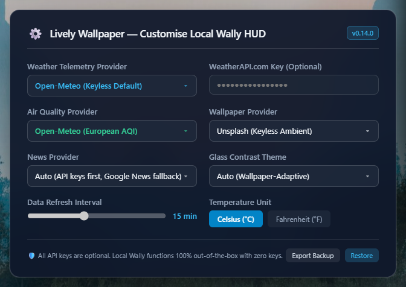
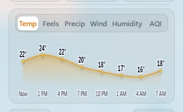
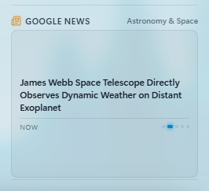
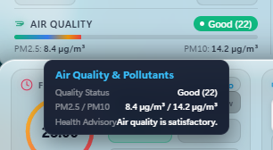
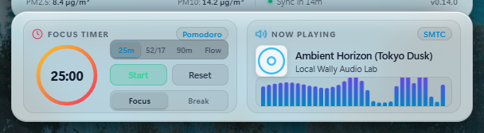

Local Wally HUD - Setup, Controls, and Configuration Walkthrough
This guide provides a comprehensive walkthrough for configuring, customizing, and troubleshooting Local Wally HUD on Windows 11 with Lively Wallpaper.
Table of Contents
- First Launch and Location Cascade
- Customizing Weather, Air Quality, News, and Wallpaper Providers
- Interactive 24-Hour Forecast Chart
- Regional News Ingestion and Interactive Story Navigation
- Progressive Disclosure: Hover Popovers and Telemetry Drawer
- Media Player, 60 FPS Sound Visualizer, and Focus Dock
- Wallpaper Favorites and Avoidance Engine
- OneDrive Personal Settings Synchronization
- Upgrading Local Wally While Preserving Settings
- Lively Properties Reference Table
- Advanced Configuration (config.js)
- Troubleshooting and Symptom-to-Action Guide
1. First Launch and Location Cascade
When Local Wally initializes, it determines your geographic coordinates through a non-blocking cascade designed to boot instantly without modal permission dialogs:
- Manual Location Override: If you entered a custom city or coordinate pair in the Diagnostics panel (press D on your desktop) or via Lively Properties, that location is geocoded once and cached permanently. It takes precedence over automatic detection.
- Persisted Automatic Location: If an automatic location was previously resolved, Local Wally paints that cached location immediately upon boot so you never see blank or placeholder screens. A silent background check detects if your laptop moved to another city and adopts changes smoothly.
- Silent Auto-Detection:
- Local Wally checks navigator.permissions.query({ name: 'geolocation' }) with a strict 1500 ms safety timeout race. In WebView2 desktop environments where host permission prompts may hang, the query safely times out and falls back to IP geolocation.
- If HTML5 Geolocation permission was already granted in your environment, precise coordinates are used.
- If not already granted, Local Wally immediately uses secure, keyless IP-based geolocation (ipapi.co).
- If the network is entirely offline, it falls back to the default coordinates specified in config.js (Tokyo, Japan).
Setting a Manual Location
- Press D over the desktop to open the Diagnostics & Location Management overlay.
- Type any city name (e.g.
London,Seattle,Bangalore) or coordinate pair (lat, lon). - Select a suggested match or press Enter.
- To return to automatic GPS/IP detection at any time, click Use automatic.
2. Customizing Weather, Air Quality, News, and Wallpaper Providers
Right-click Local Wally in your Lively Wallpaper library and choose Customise Wallpaper to adjust provider preferences:

Weather Telemetry Providers
- Open-Meteo (Keyless Default): High-resolution global forecast models with zero configuration and no API keys required.
- WeatherAPI.com (Free Key): Provides live conditions, 72-hour hourly forecasts, and US EPA air quality data in a single network roundtrip. Requires a free API key from weatherapi.com. Enter your key in the WeatherAPI.com API Key field. If no key is entered or if the API call fails, Local Wally falls back cleanly to Open-Meteo.
- OpenWeatherMap (Key Optional): Supports OpenWeatherMap One Call 3.0 or 2.5 API keys. Enter your key in the OpenWeatherMap API Key field. Falls back to Open-Meteo if the key is empty or returns an error.
- Note on MET Norway: The MET Norway / Yr.no service requires custom user-agent headers that standard browser and WebView2 environments cannot send directly; client-side requests configure cleanly through Open-Meteo.
Air Quality Providers
- Open-Meteo AQI (Keyless Default): Live European Air Quality Index (AQI) with PM2.5 and PM10 particulate tracking. No key required.
- WAQI / AQICN (Token Optional): Telemetry from the World Air Quality Index project. Requires an optional personal API token entered in WAQI API Token.
Wallpaper Photography Providers
- Unsplash (Keyless Default): Curated high-resolution landscape photography matched to your screen resolution and current weather lighting. Requires no API key.
- Wallhaven, Pexels, Pixabay: Optional photography providers. If you select one of these providers, you must provide a valid API key in its corresponding field.
- Rotate configured sources: Cycles through enabled wallpaper sources automatically on each data refresh cycle.
Regional News Providers
- Auto (API keys first): Checks for configured keys (Currents, NewsAPI) and uses them first. If no keys are provided, it automatically uses Google News.
- Google News: Keyless regional RSS headlines fetched via a lightweight CORS gateway proxy. It automatically selects local headlines based on your detected city and country code.
- NewsAPI & Currents News: Commercial news aggregators that require personal API keys entered in their respective fields.
- 15-Minute News Quota Firewall: All news adapters enforce an independent 15-minute rate-limit window per provider. This protects your API quota and prevents background polling thrashing.
All credential fields in Lively Wallpaper are masked. Local Wally works out of the box with zero API keys. If an optional keyed provider encounters an invalid key or network error, Local Wally falls back cleanly to its default keyless provider for that category (weather and air quality fall back to Open-Meteo, wallpapers fall back to Unsplash, and news falls back to Google News).
3. Interactive 24-Hour Forecast Chart
The weather card includes an inline SVG forecast chart rendered with Catmull-Rom cubic Bezier curves:

Metric Tabs
Click any tab or use the ← and → arrow keys to switch metrics:
- Temp: Hourly temperature in Celsius or Fahrenheit.
- Feels: Apparent temperature accounting for humidity and wind chill.
- Precip: Rain and precipitation probability from 0% to 100%.
- Wind: Surface wind speed trajectory in km/h or mph.
- Humidity: Relative atmospheric humidity levels.
- AQI: Color-coded European Air Quality Index forecast trajectory.
4. Regional News Ingestion and Interactive Story Navigation
The regional news dispatch keeps you informed with local and global headlines:

- Story Indicators: The bottom-right corner displays pagination dots. The elongated cyan pill highlights the active headline.
- Interactive Navigation: Click any dot or press Enter / Space when focused to switch directly to that story. Manually selecting a story pauses the automatic rotation timer so you can read without disruption.
- Publisher Tooltips: Hover over any indicator dot to see the publisher name and relative publication time.
- Reading Full Articles: Click the headline to open the original article in your default web browser. All external links use secure
https:destinations. - Geographic News Focus: Configure your preferred geographic query breadth in Lively Settings or in the News detail drawer:
- Nearby (City Only): Queries your specific city or metro area exclusively without broadening.
- Balanced (Default): Tries your city first, smoothly falling back to national or global editions if local coverage is sparse.
- Wider (Country & World): Prioritizes national and international headlines first.
- On-Demand Manual Pull ("Get latest"): When Google News is active, open the news detail drawer and click Get latest to fetch fresh headlines immediately through a sequential CORS proxy cascade. Includes a 30-second cooldown timer to prevent rate limiting.
5. Progressive Disclosure: Hover Popovers and Telemetry Drawer
Local Wally implements a two-tier progressive disclosure system so you can see quick summaries at a glance or inspect complete telemetry on demand:

Tier 1: Floating Hover Popovers
- Hover your mouse over (or Tab-focus) any of the 22 interactive HUD elements.
- A floating acrylic popover appears with secondary metrics, health advisories, moon altitude, or particulate breakdowns.
- Popovers automatically adjust position within screen boundaries so they never clip against desktop edges.
- Dismiss instantly by moving the mouse away or pressing Esc.
Tier 2: Contextual Telemetry Drawer
- Click any card or press Enter to slide open a full-height acrylic drawer.
- Shows complete meteorological parameters, barometric pressure, wind gusts, particulate measurements, and astronomical ephemeris.
- Relative Two-Row Weather Card Architecture: The weather card uses a structured two-row relative flow layout. The top status bar contains the freshness badge and next update pill, directly above the temperature and condition row. Condition descriptions wrap cleanly without ever overlapping or colliding with status badges.
- Truthful Weather Provenance & Observation Time: The weather detail drawer provides an honest breakdown of your atmospheric data source, distinguishing between live network telemetry, cached entries, stale offline snapshots, and fallback routes. Displays provider name, exact station observation time (when reported by the provider), fetch time, and cache age.
- HUD Weather Freshness & Next Update Indicators: A compact status bar on the weather card displays real-time data status (
Live · @ 9:25 AM,Live · 4m ago,Cached · 12m old,Stale · 25m old, orFallback) paired with a dynamic next update schedule indicator (Next: 9:40 AM), continuously ticking with cache TTL. - Press Esc or click outside the drawer to close it.
6. Media Player, 60 FPS Sound Visualizer, and Focus Dock
The companion dock sits directly below the main HUD inside a unified #hud-stack flex container, ensuring a constant 14px gap across all screen heights:

Pomodoro & Focus Timer
- Four supported timing techniques:
- Press P to start or pause the timer.
- Real wall-clock timestamp calculations ensure the timer never drifts or loses time when your PC is under heavy load.
- Concentric SVG Progress Ring: Driven by a scalable SVG progress ring with dual linear gradients (cyan for focus, emerald for breaks), optically centered at all display resolutions.
- Pomodoro (25/5): 25 minutes of work followed by a 5-minute break.
- 52/17 Rule: 52 minutes of sprint focus followed by a 17-minute rest.
- Ultradian (90/20): 90 minutes of deep focus followed by a 20-minute rest.
- Flowtime: Stopwatch count-up mode for open-ended focus sessions.
Universal Media Player & Audio Visualizer
- Connects to Windows System Media Transport Controls (SMTC) to display track titles, artists, and album artwork from Spotify, Apple Music, YouTube Music, Tidal, or web browsers.
- Features a 32-bar audio visualizer driven by Lively's audio spectrum bridge running at 60 FPS.
- Silence Hysteresis: When music stops or is paused for more than 1.5 seconds, the visualizer automatically goes to sleep and clears the canvas to keep idle CPU usage at roughly 0.0%.
- In browser preview mode, press M to cycle through built-in demo tracks (Synthwave, Lo-Fi, Ambient).
7. Wallpaper Favorites and Avoidance Engine
Local Wally includes a native wallpaper personalization engine that operates entirely via lightweight metadata without saving bulky image files to disk:
- Floating Wallpaper Actions Bar: Located at the bottom-right corner of your desktop:
- Favorite (Heart): Adds the currently displayed wallpaper to your permanent collection.
- Less Like This (Ban / Thumbs Down): Immediately flags the current wallpaper as avoided and rotates to the next candidate.
- Favorites Gallery (Bookmark / Folder): Slides open the Favorites drawer.
- Favorites Slide-Out Drawer: Displays a clean gallery of all your favorited wallpapers. Click Apply on any card to immediately switch to that wallpaper, or Remove to delete it from your favorites collection.
- Instant Undo Protection: When you click "Less like this", a temporary 6-second toast notification appears with an Undo button in case you clicked it by mistake.
- Intelligent Candidate Filtering: When rotating wallpapers, avoided asset IDs are strictly filtered out before ranking candidates. If all candidate images are in your avoided list, Local Wally preserves your current wallpaper rather than showing a duplicate or entering an infinite retry loop.
- Strict Collection Bounds: Favorites are capped at 100 items and avoided records at 200 items, using automatic LRU eviction to prevent storage bloat.
8. OneDrive Personal Settings Synchronization
Local Wally features optional, cross-device synchronization with personal Microsoft OneDrive accounts:
- Integrated Lively Wallpaper Controls: Connect, sync, or disconnect directly from Lively Wallpaper's Customise Wallpaper dialog using dedicated action buttons (with cloud icons), from the HUD footer button (
☁ OneDrive), or from the in-wallpaper Diagnostics panel (press D). - Direct Browser OAuth (Interactive Flow): Clicking Connect OneDrive opens the modal and launches your default browser to Microsoft's secure sign-in page (
login.microsoftonline.com). Sign in with your personal Microsoft account, copy the authorization code from the redirect URL, paste it into the modal, and click Connect Account. Local Wally directly exchanges the code via Microsoft's CORS-enabled token endpoint. Alternatively, users can runtools/onedrive-login.batfor an automated command-line device code login. - Any-Folder Backup Capability: Save your settings to any OneDrive directory by customizing the OneDrive Backup Folder property (default:
Apps/Local Wally). You can specify any personal folder path (e.g.Backups/MyPCorConfigs/LocalWally). Local Wally automatically routes between the private AppFolder (me/drive/special/approot) and custom folder hierarchies (me/drive/root:/<path>). - Strict Privacy Firewall (Zero Location in Cloud): All GPS coordinates, manual city names, location history, cached weather, news snapshots, and OAuth tokens are strictly stripped before uploading. Personal location data stays 100% on your local PC.
- Local-First Architecture: Your wallpaper and HUD boot instantly from local storage in under 50ms. Background sync checks are non-blocking and automatically park during games or screen lock.
- Deterministic 3-Way Merge: Synchronizes your customized Lively settings, API keys, and wallpaper favorites across PCs while preserving whichever machine made the newest edits.
9. Upgrading Local Wally While Preserving Settings
Lively Wallpaper maintains customized properties per wallpaper ID. Importing a release zip directly always mints a new wallpaper ID, which starts with default values. To upgrade without losing your customized settings, choose one of these three methods:
Method 1: One-Click Updater Script (Recommended)
- Download
upgrade-local-wally.batfrom the Latest GitHub Release or from this repository'stools/updater/folder. - Double-click
upgrade-local-wally.bat. - The script locates your installed Local Wally folders (supporting both desktop installer and Microsoft Store versions of Lively) and overlays the updated files in place.
- Restart Lively Wallpaper or re-select Local Wally. All customized settings remain intact.
Method 2: Manual ZIP Overlay
- In Lively Wallpaper, temporarily switch to another wallpaper to release file locks.
- Download
local-wally.zipfrom the Latest GitHub Release. - Extract the contents directly into your existing Local Wally installation folder, choosing Replace all files:
- Switch back to Local Wally in Lively. All settings are preserved because the wallpaper storage ID was not changed.
%LocalAppData%\Lively Wallpaper\Library\wallpapers\
Method 3: Settings Export and Import
- On your existing Local Wally wallpaper, open Lively settings (Customise Wallpaper) and click Export Settings.
- Save the resulting JSON backup file to your computer.
- Import the new
local-wally.zipinto Lively Wallpaper. - On the newly added wallpaper, click Customise Wallpaper, click Import Settings, and select your saved JSON file.
Privacy Notice: Settings backup files contain your configured API keys and custom location settings. Always keep your backup JSON file private. Never post or share an unredacted settings export in public GitHub issues or forums.
10. Lively Properties Reference Table
The following table lists every property defined in LivelyProperties.json:
| Setting Identifier | UI Label | Type | Default | Options / Range |
|---|---|---|---|---|
customLocation | Custom Location (blank = Automatic) | textbox | "" | City name or lat, lon coordinates |
hudPosition | HUD Position | dropdown | Top Right | Top Right, Top Left, Bottom Right, Bottom Left, Middle Right, Middle Left, Middle Top, Middle Bottom, Center |
glassBlur | Glass Blur (px) | slider | 14 | 0 to 40 px (step 2) |
particleDensity | Particle Density Multiplier | slider | 1.0 | 0.2 to 2.0 (step 0.1) |
tempUnit | Temperature Unit | dropdown | Celsius (°C) | Celsius (°C), Fahrenheit (°F) |
refreshInterval | Data & Wallpaper Refresh Interval | slider | 15 | 5 to 30 minutes (step 1) |
wallpaperProvider | Wallpaper Provider | dropdown | Unsplash | Unsplash, Wallhaven, Pexels, Pixabay, Rotate configured sources |
unsplashApiKey | Unsplash Access Key (Optional) | textbox | "" | Personal Unsplash API key |
wallhavenApiKey | Wallhaven API Key (Optional) | textbox | "" | Personal Wallhaven key |
pexelsApiKey | Pexels API Key (Optional) | textbox | "" | Personal Pexels key |
pixabayApiKey | Pixabay API Key (Optional) | textbox | "" | Personal Pixabay key |
weatherSimulation | Simulate Weather (Debug) | dropdown | Live Weather (Auto) | Live Weather (Auto), Clear Day, Rain & Storm, Snow, Starry Night |
contrastMode | Glass Contrast Theme | dropdown | Auto (Wallpaper-Adaptive) | Auto (Wallpaper-Adaptive), Dark Glass (White Text), Light Glass (Dark Text) |
showMediaFocusDock | Show Media & Focus Dock | checkbox | true | Show or hide bottom companion dock |
focusTimerMode | Focus Timer Mode | dropdown | Pomodoro (25/5) | Pomodoro (25/5), 52/17 Rule, Ultradian (90/20), Flowtime (Stopwatch) |
pomodoroFocusMinutes | Pomodoro Focus Duration (Minutes) | slider | 25 | 5 to 60 minutes |
pomodoroBreakMinutes | Pomodoro Break Duration (Minutes) | slider | 5 | 1 to 15 minutes |
pomodoroLongBreakMinutes | Pomodoro Long Break Duration (Minutes) | slider | 15 | 5 to 30 minutes |
enableAudioVisualizer | Enable Audio Visualizer (60 FPS) | checkbox | true | Toggle 32-bar visualizer animation |
enableDynamicSolarLighting | Dynamic Solar Lighting & Shadows | checkbox | true | Toggle sun-angle lighting and card drop shadows |
showNewsFeed | Show Regional News Feed | checkbox | true | Show or hide news card |
newsProvider | News Provider | dropdown | Auto (API keys first) | Auto (API keys first), Google News, NewsAPI, Currents News, Rotate configured sources |
newsFocus | News Focus | dropdown | Balanced (City with Region Fallback) | Nearby (City Only), Balanced (City with Region Fallback), Wider (Country & World) |
newsApiKey | NewsAPI Key (Optional) | textbox | "" | Personal NewsAPI key |
currentsApiKey | Currents API Key (Optional) | textbox | "" | Personal Currents API key |
showHardwareMonitor | Show Hardware Monitor | checkbox | true | Show or hide CPU/GPU/RAM/Disk gauges |
showCelestial | Show Solar & Lunar Ephemeris | checkbox | true | Show or hide dynamic day/night cards |
showAqi | Show Air Quality Index (AQI) | checkbox | true | Show or hide AQI gauge and pollutants |
showEnvironmentalMetrics | Show Environmental Metrics | checkbox | true | Show or hide Humidity, Clouds, and Precip row |
showPomodoro | Show Pomodoro Focus Timer | checkbox | true | Show or hide Pomodoro timer in companion dock |
showMediaPlayer | Show Media Player & Visualizer | checkbox | true | Show or hide media card in companion dock |
showNetworkUsage | Show Network Bandwidth | checkbox | true | Show or hide Download / Upload speed meters |
showBatteryInfo | Show Laptop Battery Telemetry | checkbox | true | Automatically hidden on desktop PCs without batteries |
weatherProvider | Weather Telemetry Provider | dropdown | Open-Meteo (Keyless) | Open-Meteo (Keyless), WeatherAPI.com (Free Key), OpenWeatherMap (Key Optional) |
weatherapiKey | WeatherAPI.com API Key (Optional) | textbox | "" | Free tier WeatherAPI.com key |
openweathermapApiKey | OpenWeatherMap API Key (Optional) | textbox | "" | Personal OpenWeatherMap key |
aqiProvider | Air Quality Provider | dropdown | Open-Meteo AQI (Keyless) | Open-Meteo AQI (Keyless), WAQI / AQICN (Token Optional) |
waqiApiKey | WAQI API Token (Optional) | textbox | "" | Personal WAQI token |
showForecastChart | Show Forecast Chart | checkbox | true | Show or hide 24-hour SVG forecast chart |
defaultForecastTab | Default Forecast Tab | dropdown | Temperature | Temperature, Feels Like, Precipitation, Wind, Humidity, AQI |
settingsExport | Export Settings (incl. API keys) | button | - | Exports all settings to JSON file |
settingsImport | Import Settings | button | - | Restores settings from JSON file |
onedriveConnect | ☁ Connect OneDrive (Sign In) | button | - | Launches browser authentication modal |
onedriveSync | ☁ Backup / Sync Settings Now | button | - | Triggers immediate two-way synchronization |
onedriveDisconnect | ✕ Disconnect Account | button | - | Clears tokens and resets synchronization |
onedriveFolder | OneDrive Backup Folder | textbox | "Apps/Local Wally" | Custom folder path or default AppFolder |
11. Advanced Configuration (config.js)
When running Local Wally outside of Lively Wallpaper (such as in a local browser preview via node serve.js), settings can be modified in config.js. The schema mirrors the properties in Lively Wallpaper:
window.LOCAL_WALLY_CONFIG = {
refreshIntervalMinutes: 15,
hudPosition: 'top-right',
glassBlurPx: 14,
glassSaturationPct: 190,
tempUnit: 'C',
newsRotateIntervalSeconds: 7,
newsFocus: 'balanced',
hwUpdateIntervalSeconds: 10,
wallpaperProvider: 'unsplash',
weatherProvider: 'open-meteo',
weatherapiKey: '',
openweathermapApiKey: '',
aqiProvider: 'open-meteo',
waqiApiKey: '',
newsProvider: 'auto',
newsApiKey: '',
currentsApiKey: '',
defaultLocation: {
city: 'Tokyo',
country: 'Japan',
latitude: 35.6762,
longitude: 139.6503
}
};
12. Troubleshooting and Symptom-to-Action Guide
The following symptom-to-action table is based on verified application logic:
| Symptom | Verified Cause | Action to Take |
|---|---|---|
| Location displays "Locating..." indefinitely | WebView2 host geolocation permission query hung without responding | Update to the latest release (which incorporates an automatic 1500 ms IP fallback race) or press D and specify a manual city name. |
| Location detected as wrong city | IP geolocation provider resolved nearest ISP gateway rather than physical location | Press D on your desktop to open the Diagnostics panel, enter your desired city name or coordinates, and press Enter. |
| Weather or AQI displays "--" or "Unavailable" | Network connectivity issue or upstream provider returned incomplete payload | Check your internet connection. Local Wally never fabricates missing metrics. It will retry automatically on the next scheduled refresh interval (default 15 minutes). |
| WeatherAPI.com or OpenWeatherMap fails | Missing, invalid, or expired API key | Ensure your key is typed correctly in Lively Wallpaper settings. If the keyed call fails, Local Wally automatically falls back to Open-Meteo. |
| Regional news headlines are not updating | 15-minute news quota firewall is active, or CORS proxy is temporarily unreachable | News enforces an independent 15-minute rate limit window per provider to protect API quotas. Wait for the window to expire. If using Google News, verify your internet connection. |
| OneDrive sync prompts "Sign-in required" | Microsoft OAuth token expired or revoked | Press D on the desktop, click Connect OneDrive, and complete the Device Code sign-in flow at microsoft.com/devicelogin. |
| Wallpaper marked as avoided still appears | Collection bound reached or all provider candidates are avoided | Avoided list holds up to 200 items. If all candidate images from your active provider are avoided, Local Wally preserves your current wallpaper rather than breaking. |
| Wallpaper or data does not update immediately | Local Wally adheres to its configured refresh cadence (default 15 minutes) | Data refreshes automatically according to your Data Refresh Interval slider (5 to 30 minutes). Changing a provider setting in Lively immediately triggers a fresh sync. |
| HUD clock or hardware meters frozen after sleep | System entered S0 Modern Standby or deep sleep | Update to the latest release. On resume from sleep or when the network comes back online, the clock synchronizes immediately and triggers a background refresh if elapsed time exceeds 15 minutes. |
| Visualizer or animation runs when a game is open | Lively Wallpaper window pause event was not forwarded by host | Ensure Lively Wallpaper settings are set to Pause when applications are fullscreen or focused. In LivelyInfo.json, verify that --pause-event true is present in the arguments. |
Need further help? Visit GitHub Issues to ask questions or submit bug reports.